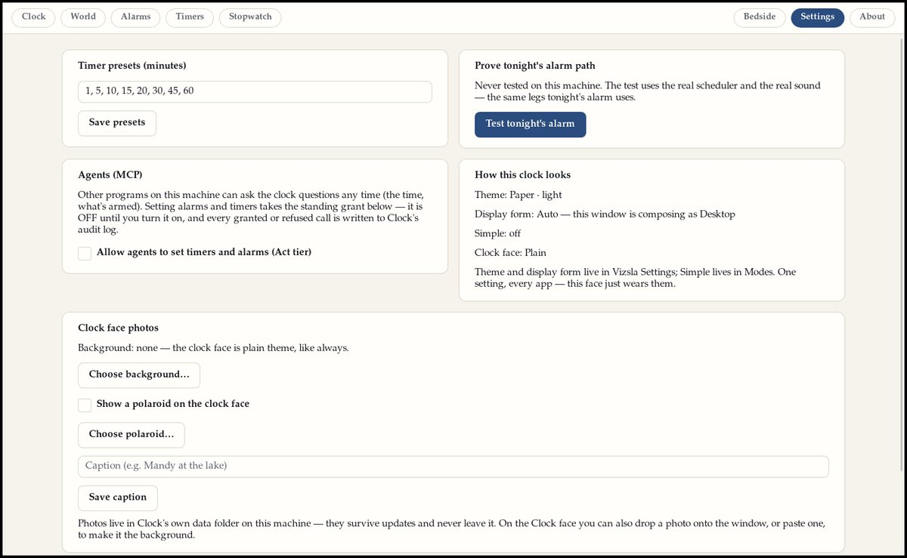

The roster
What’s inside
Every app below exists and is installed on the machines that run Vizsla today — names and versions taken from the same Family Catalog the fleet installs from (generation 371, read 27 October 2026). Things still being built are not listed as done. That’s the rule for this whole site.

The day
- Arrival0.8.7The calm Today page the day starts on.
- Elefunk0.6.1Mail, tasks, calendar, and people, in one place.
- Notes1.0.3The family notebook — real Markdown files in your Notes folder.
- NOTE PAPER0.1.0Sticky notes that live on your desktop — checkable task lines and all.
- Weather1.1.1Calm, detailed weather for your places.
- Clock1.4.2Clocks for here and everywhere — the world's top cities, one tap away.
- Vizsla Time0.1.2The family's clock and calendar, living in the bar.
- Notifications1.6.0Notifications that rank by what matters, not by who shouted loudest.
- Quiet Bell0.1.0A calm history of what your machine has told you.
- Modes & Focus0.2.2Modes for the day — and who may interrupt, and when.
Your stuff
- Fable Files0.1.12The file manager. Your files on shelves, not in piles.
- Photos1.1.1Your photo library by year, month, and day — with the facts from the photos themselves.
- Art Gallery0.3.0The picture frame, grown up — your art and photos owning the big screen.
- Poster Player1.1.0Posters for your screens — composed once, played only on the shape they were made for.
- Reader1.5.0Your books and PDFs, your place kept — with a studio for forms, signatures, and true redaction.
- Scanner0.2.1The scanner, with pages stood upright and read clean.
- Film Ferret0.1.0A film library: the catalog, and the hunt for the hard-to-find.
- Fable Clip0.1.0Clip, don't haul — paste a link, pick the moment, keep only that piece.
- Rabbit Ears0.6.2Television — live channels and the guide, on a calm screen.
- Audio Waves1.3.6Podcasts and audio, with transcription that runs on your own machine.
- Songdog0.1.2The family MIDI player — the arcade songbook and your own files, synthesized live.
- The Attic1.2.1A clipping box — articles saved in full, on your machine.
- Foodi0.6.0Groceries and meal planning — the list, the month, and a pantry check before anything commits.
- Menu Board0.1.1The restaurant board — your menu on the big screen, read live from Foodi and never re-typed.
- Island Vault1.0.1An offline library, shelved by topic.
- Sorts1.0.1The font manager — every font shown in its own face.
- Characters2.0.1Every character and emoji, fully offline.
- Screensnips0.4.1Screenshots, from any workspace — copied the moment you take them.
- Upscaler1.0.2AI image enlarging, on your machine.
- Camera1.2.0The camera — photos that remember where they were taken.
- Vizsla Arcade0.7.0Thirty-one games in one cabinet — the full slate, phone face included.
- Vydra0.4.1Games wearing the classic console interfaces, rebuilt true to the real machines.
- Garage Log0.1.0Your car's service history, kept by miles and by months.
- Upkeep0.1.0The house's quiet deadlines — filters, batteries, and flushes, tracked before they lapse.
- Washing Machine0.2.2Washes files before you share them — strips hidden metadata and flags personal details hiding inside.
Finding out & getting things done
- Sniff Search1.6.7Search that answers with its sources named.
- Vizsla Help1.0.5The manual — the rules the system lives by, in plain words.
- Shortcut Hound0.1.1Every keyboard shortcut, one keypress away.
- Bear Bucks1.2.0The register and the books for a small business.
- Medical1.1.1A private health record — one encrypted store, on your machine.
- Secrets1.7.1Passwords and accounts, kept in one guarded store, with fingerprint unlock.
- Phone Launcher0.7.2The phone-shaped face of the same system.
- Dash Launcher1.1.1The car's face — big buttons for the dash, honest about what the car is doing.
- TV Launcher0.2.8The television's home — five calm tiles, no ads, no storefront.
- Fetch0.2.0The local face of Vizsla's AI front door.
- Clip Kennel0.1.0Clipboard history with manners — things copied from password apps are never kept.
- Plan a Trip0.1.0A trip wizard that shows you the finished plan before anything is sent — and never invents an itinerary.
- Plan the Week0.1.0Six questions over your real calendar, and the week is planned — big type, no fuss.
- Write a Letter0.1.0Letters shaped correctly from a short intake — cover letters to thank-yous — sent, printed, or saved.
- Write a Resume0.2.0A résumé that asks only the questions your kind of work needs, with every answer kept in one bank.
- WordCraft · Dactylo0.11.0Writing with a typewriter's focus — one scene model, a binder and a corkboard, and a lens for echoes in your prose.
- Printer0.3.0Your printers, each wearing a picture of itself — queues and jobs in plain sight.
- Vizsla Calculator1.7.2The calculator — including a voice-only face for the dash.
Underneath — the system itself
- Vizsla Settings1.13.11Every knob, in one house.
- System Profiler0.9.3What your machine is doing, in plain sight — live charts and a history you can scrub.
- Vizsla Connect0.1.1The fabric between your machines: discovery, pairing, and the catalog itself.
- Vizsla Workspaces0.2.8Named workspaces — Home, Work, School — standing ready whether they're open or not.
- Vizsla Overview0.1.1Every window, every workspace, at a glance.
- Vizsla Exposé0.1.0Show all windows — every open window as a live thumbnail, grouped by workspace.
- Vizsla App List0.3.18The app list, with your profile at the door.
- Vizsla Desktop Menu0.2.1The desktop right-click menu, in the family style.
- Family Icon Themes2.5.2The family's icon themes — every app drawn in the same hand.
- Screen Saver0.4.5Screen savers that belong to your theme — the theme's art, come alive.
- The Salute0.2.3The session screen behind Ctrl+Alt+Del.
- Pointer0.5.2Pointer and camera settings — cameras are off until you say so.
- Pipette1.0.3The color picker.
- Vizsla Ruler0.3.5A screen ruler that measures in real units, and says where every number came from.
- Retrieve0.1.0Backups — plug in a drive and it becomes a copy target.
- Drive Utility1.2.0Drives, cared for — deep health reads, backups with a fingerprint, and a verify pass that proves the copy.
- Vizsla Tray0.2.2The system tray: network and the small machinery, in one place.
- Terminal1.1.3The terminal — a file navigator with manners, in the family style.
- Caffeine0.1.2Keeps the machine awake while you ask — and lets go when you quit.
- Phone Home0.2.0Which apps talked to the network, per app, out in the open.
- Network Map1.0.0Your network drawn as a map — every machine in the house, seen live.
- Keyboard Switcher1.0.0Switch keyboards from one sheet.
- Vizsla Keyboard0.3.0The on-screen keyboard, with Secrets autofill.
- Text Services — Dictation0.2.0Dictation that types where you point it.
- Sound Desk0.1.1The sound editor — what every tap, alert, and theme sounds like, tuned in one place.
- Vizsla Torrent Daemon0.1.2The one torrent engine the whole system shares.
- Island Vault Daemon (vaultd)0.1.0The quiet engine under Island Vault.
- Furever Stick0.1.0Makes a Vizsla install stick: you run it, it does the work.